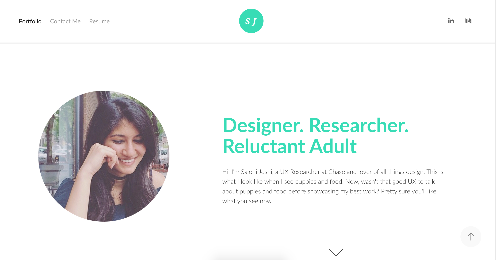
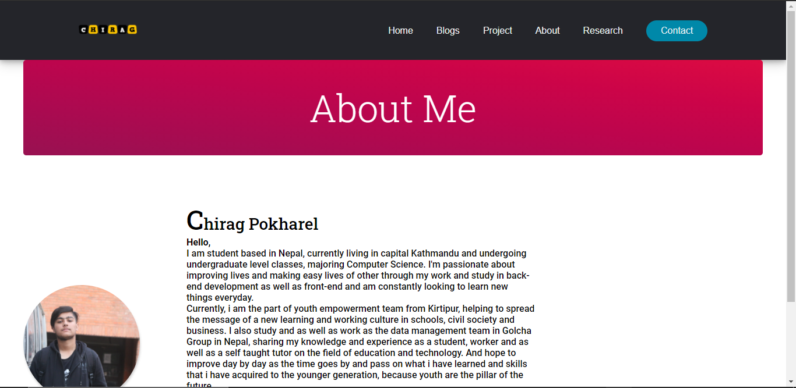

Contact
Contact
Research Description

About page of the reference website
This about page is the reference i took, where it shows the deatail and whereabout of the person. In the reference the photo of the person/developer is in left hand side of the page and the information is on the right hand side. The information show the detail and the work they do.

About page of my website
This it the about page that i have created by taking the reference. I have included my photo in the left hand side of the page and the information just right to it, I have include my socials on the bottom hand side using anchor tag which can be redirected to the given social account once it been clicked.